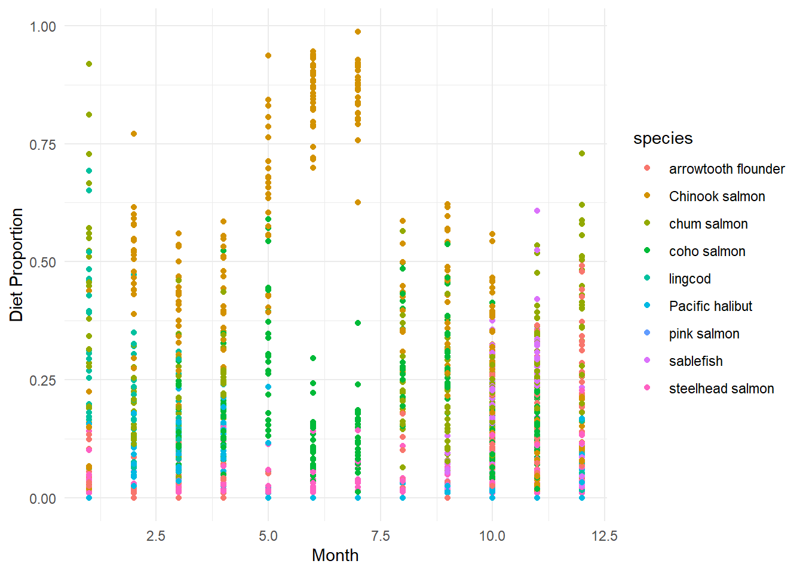
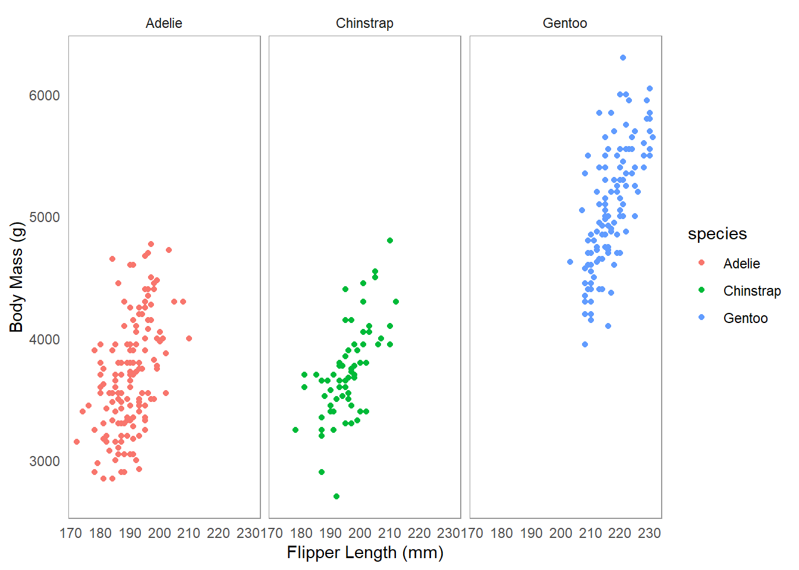

Van Cise, Amy M., M. Bradley Hanson, Candice Emmons, Dan Olsen, Craig O. Matkin, Abigail H. Wells, and Kim M. Parsons. 2024. “Spatial and Seasonal Foraging Patterns Drive Diet Differences Among North Pacific Resident Killer Whale Populations.”Royal Society Open Science 11 (9). https://doi.org/10.1098/rsos.240445.
Guiding research questions
In this lab we will be using simulated data on southern resident killer whale diet to explore two guiding research questions:
Q1: Does Chinook salmon make up a majority of the southern resident killer whale (SRKW) diet?
Q2: Does southern resident killer whale (SRKW) diet change throughout the year?
Note
We will ALL first work on answering Q1 together in class, and see how far we get! If you complete Q1, see if you can find someone in class that has not finished, and try to help them troubleshoot their code!
Setup your (coding) environment
Create a new folder for week4 in your R project directory
Open a new .Rmd or .qmd file in your week4 folder
Q1: Does Chinook salmon make up a majority of the southern resident killer whale (SRKW) diet?
Step 1. Hypotheses and variables
Write down your null and alternative hypotheses
Ho:
Ha:
Tip
Proper scientific notation for hypotheses uses subscript formatting. You can use markdown syntax to easily make any text subscript by wrapping that text in the ~ tilde symbol . For example, H~o~ when rendered to markdown or viewed in RStudio visual editor looks like Ho .
Identify your x and y variables
x is the independent, or predictor variable
y is the dependent, or response variable
Tip
Think about whether your variables are categorical (factor) or continuous (numeric). This will help you decide which statistical test to use later!
Load libraries
Code
library(tidyverse)library(ggridges) # for making cool ridge plots with ggplot!
Load inputs
Use the read_csv() function from the readr package to read in the simulated killer whale diet data.
Tip
Remember to adjust the file path as necessary to point to the correct location of your data file. The file path within the parentheses should be wrapped in quotes.
Remember to name the data frame something meaningful and short!
Avoid spaces in your naming conventions! Instead use:
Tidyverse (Preferred):snake_case for everything.
Base R: Often uses period.separated names.
Other:camelCase is also used in some contexts.
Use the assignment operator <- to assign the output of the read_csv() function to your data frame name.
The hotkey Alt + - (or Option + - on Mac) can be used to insert the assignment operator <-.
Step 2. Wrangle and visualize the data
Identify the variables needed to answer your research question
Use the glimpse() function from the dplyr package to view the structure of your data frame and identify your x and y variables you will need to answer your research question.
propDiet refers to the proportion of fish species DNA found in a poop sample
Tip
Ask yourself:
Are my x and y variables present in the data frame?
If not, what variables do I need to transform to get my x and y variables?
Wrangle your variables into columns
group_by & summarize
This week we are going to learn the functions group_by(), summarize() from the dplyr package to wrangle our data.
Use the R help function ? to learn more about these functions. For example, to learn about the group_by() function, run ?group_by in the console or a code chunk.
group_by is commonly followed by summarize(). These two functions work together hand in hand to first group your data frame by a variable and then compute the same summary statistics for each group.
Go here to gain more insight into what these important functions do.
Use summarize() to create a new column for each statistic you explicitly code. summarize() is designed to work with functions that take a vector of values and return a single value. Here are some useful candidates:
Function
Returns
mean()
mean value of a vector
sd()
standard deviation of a vector
Visualize your data
Code
ggplot(your_data, aes(x = your_x_variable, y = your_y_variable)) +geom_point() +theme_minimal()
Tip
Try layering geom_boxplot(alpha=0.7) on top of a geom_point() layer! This shows both the individual data points and the boxplot quartiles summary simultaneously.
Step 3. Model the relationship
Choose an appropriate model
Categorical data:
ANOVA aov()
Follow-up with a Tukey HSD TukeyHSD()
Continuous data:
linear regression lm()
Is the relationship significant?
Is the relationship positive or negative?
Q2: Does southern resident killer whale (SRKW) diet change throughout the year?
Step 1. Hypotheses and variables
Write down your null and alternative hypotheses
Ho:
Ha:
Identify your x and y variables
x is the independent, or predictor variable
y is the dependent, or response variable
Step 2. Wrangle and visualize the data
Code
ggplot(kw_diet, aes(x = Month, y = propDiet, color = species, fill = species)) +geom_point()+labs(x ="Month", y ="Diet Proportion") +theme_minimal()

This data is pretty messy when viewed all together! Let’s pickout one species to focus on using filter() from the dplyr package.
filter() allows us to subset our data frame based on specific criteria. For example, we can filter the species column to only include rows where the species is ["pick your favorite fish"].
Try layering geom_smooth() on top of a geom_point() layer! This shows both the individual data points and the trend simultaneously.
Step 3. Model the relationship
Does the proportion of [insert your fish here] in the diet change throughout the year?
Choose an appropriate model
Categorical data:
ANOVA aov()
Follow-up with a Tukey HSD TukeyHSD()
Continuous data:
linear regression lm()
Is the relationship significant?
Is the relationship positive or negative?
Bonus - facet_wrap()
Tip
After looking at one fish species, can you look at them all together? Try using facet_wrap() to create a panel of plots, one for each species!
An example dataset palmerpenguins is available in the palmerpenguins package. Here is an example of how to use facet_wrap() with this dataset to create separate plots for each species of penguin.
Code
library(palmerpenguins)ggplot(penguins, aes(x = flipper_length_mm, y = body_mass_g, color = species)) +geom_point() +facet_wrap(~species) +labs(x ="Flipper Length (mm)", y ="Body Mass (g)")+theme_minimal()+theme(panel.grid.major =element_blank(),panel.grid.minor =element_blank(),panel.border =element_rect(color ="grey60",fill =NA,linewidth =0.4))

Source Code
---title: "1. Southern resident killer whale diets"subtitle: "Summary statistics across grouped variables"page-layout: articleauthor: - Amy Van Cise - Sarah Tanjadate: "2026-01-20"draft: falsedate-modified: todayorder: 1format: html: toc: true toc-depth: 2 number-sections: false code-fold: truebibliography: "../refs/bib.bibtex"editor: markdown: wrap: 72---```{r, setup, include=FALSE}knitr::opts_chunk$set(echo =TRUE, # Display code chunkseval =TRUE, # Evaluate code chunkswarning =FALSE, # Hide warningsmessage =FALSE, # Hide messagescomment ="") # Prevents appending '##' to beginning of lines in code output)) ```# BackgroundOptional background reading:- [What's for dinner? Scientists unearth key clues to cuisine of resident killer whales](https://www.washington.edu/news/2024/09/19/killer-whale-cuisine/)- [Spatial and seasonal foraging patterns drive diet differences among north Pacific resident killer whale populations](https://royalsocietypublishing.org/rsos/article/11/9/rsos240445/92991/Spatial-and-seasonal-foraging-patterns-drive-diet) @vancise2024## Guiding research questionsIn this lab we will be using simulated data on southern resident killerwhale diet to explore two guiding research questions:> Q1: Does Chinook salmon make up a majority of the southern resident> killer whale (SRKW) diet?> Q2: Does southern resident killer whale (SRKW) diet change throughout> the year?::: callout-noteWe will **ALL** first work on answering Q1 together in class, and seehow far we get! If you complete Q1, see if you can find someone in classthat has not finished, and try to help them troubleshoot their code!:::### Setup your (coding) environment- Create a *new folder* for *week4* in your R project directory- Open a *new .Rmd* or *.qmd* file in your *week4* folder# Q1: Does Chinook salmon make up a majority of the southern resident killer whale (SRKW) diet?## Step 1. Hypotheses and variables### Write down your null and alternative hypotheses- H~o~:- H~a~:::: callout-tipProper scientific notation for hypotheses uses subscript formatting. Youcan use markdown syntax to easily make any text subscript by wrappingthat text in the `~` tilde symbol . For example, `H~o~` when rendered tomarkdown or viewed in RStudio visual editor looks like H~o~ .:::### Identify your x and y variables- x is the independent, or predictor variable- y is the dependent, or response variable::: callout-tipThink about whether your variables are categorical (factor) orcontinuous (numeric). This will help you decide which statistical testto use later!:::### Load libraries```{r}library(tidyverse)library(ggridges) # for making cool ridge plots with ggplot!```### Load inputs- Use the `read_csv()` function from the `readr` package to read in the simulated killer whale diet data.::: callout-tipRemember to adjust the file path as necessary to point to the correctlocation of your data file. The file path within the parentheses shouldbe wrapped in quotes.`your_data <- read_csv("path/to/your/datafile.csv")`- Remember to name the data frame something meaningful and short!- Avoid spaces in your naming conventions! Instead use: - **Tidyverse (Preferred):** `snake_case` for everything. - **Base R:** Often uses `period.separated` names. - **Other:** `camelCase` is also used in some contexts. - Use the assignment operator `<-` to assign the output of the`read_csv()` function to your data frame name.- The hotkey `Alt + -` (or `Option + -` on Mac) can be used to insert the assignment operator `<-`.:::```{r}#| include: falsekw_diet <-read_csv("../output/KW_diet_simulated_data.csv")```## Step 2. Wrangle and visualize the data```{r, include=FALSE}# Does chinook make up a majority of the diet?#1 wrangle data - learn group_by, summarize, and mutatediet_summary <- kw_diet %>%group_by(Ind,species) %>%summarize(meanDiet =mean(propDiet)) %>%mutate(Chinookyesno =ifelse(species =="Chinook salmon", "yes", "no")) #2 plot dataggplot(diet_summary, aes(y = species, x = meanDiet, fill = species)) +geom_density_ridges()ggplot(diet_summary, aes(x = Chinookyesno, y = meanDiet, fill = Chinookyesno)) +geom_boxplot()#3 statistictest <-aov(meanDiet~Chinookyesno, data=diet_summary)summary(test)diet_summary_all <- kw_diet %>%group_by(species) %>%summarize(meanDiet =mean(propDiet))glimpse(diet_summary_all)anova_all <-aov(meanDiet~species, data=diet_summary_all)summary(anova_all)```### Identify the variables needed to answer your research question- Use the `glimpse()` function from the `dplyr` package to view the structure of your data frame and identify your x and y variables you will need to answer your research question.```{r}glimpse(kw_diet)```In this dataframe - `species` refers to fish species consumed - `propDiet` refers to the proportion of fish species DNA found in a poop sample::: callout-tip- Ask yourself: - Are my x and y variables present in the data frame? - If not, what variables do I need to transform to get my x and y variables?:::### Wrangle your variables into columns#### group_by & summarizeThis week we are going to learn the functions `group_by()`,`summarize()` from the `dplyr` package to wrangle our data.Use the `R` help function `?` to learn more about these functions. Forexample, to learn about the `group_by()` function, run `?group_by` inthe console or a code chunk.`group_by` is commonly followed by `summarize()`. These two functionswork together hand in hand to first group your data frame by a variableand then compute the same summary statistics for each group.Go [here](https://posit.cloud/learn/recipes/transform/TransformI) togain more insight into what these important functions do.```{r, include=TRUE, eval=FALSE} new_dataframe <- your_data %>%group_by(col_a, col_b) %>%summarize(new_col =mean(col_a),new_col2 =sd(col_a))```Use `summarize()` to create a new column for each statistic youexplicitly code. `summarize()` is designed to work with functions thattake a vector of values and return a single value. Here are some usefulcandidates:| Function | Returns ||----------|--------------------------------|| `mean()` | mean value of a vector || `sd()` | standard deviation of a vector |```{r, include=FALSE}diet_summary <- kw_diet %>%group_by(Ind, species) %>%summarize(meanDiet =mean(propDiet),sdDiet =sd(propDiet))glimpse(diet_summary) ``````{r, include=FALSE}#mutate & ifelse#We will also use the mutate() function from the dplyr package to create a new column indicating whether or not Chinook salmon is present in the diet.diet_chinook <- diet_summary %>%mutate(chinookyesno =ifelse(species =="Chinook salmon", "yes", "no"))glimpse(diet_chinook)```### Visualize your data```{r, eval=FALSE, include=TRUE} ggplot(your_data, aes(x = your_x_variable, y = your_y_variable)) +geom_point() +theme_minimal()```::: callout-tipTry layering `geom_boxplot(alpha=0.7)` on top of a `geom_point()` layer!This shows both the individual data points and the boxplot quartilessummary simultaneously.:::```{r include=FALSE}ggplot(diet_summary, aes(x = species, y = meanDiet, fill = species, color = species)) +geom_point() +geom_boxplot(alpha =0.7) +guides(color ="none", fill ="none") +labs(x ="Species", y ="Proportion in Diet") +theme_minimal() +theme(axis.text.x =element_blank()) # hide species labels``````{r, include=FALSE}ggplot(diet_chinook, aes(x = species, y = meanDiet, color = chinookyesno, fill = chinookyesno)) +geom_point() +geom_boxplot(alpha =0.6) +labs(x ="Chinook in Diet", y ="Proportion in Diet") +theme_minimal() +theme(axis.text =element_text(angle =45))``````{r, include=FALSE}ggplot(diet_summary, aes(y = species, x = meanDiet, fill = species)) +geom_density_ridges()+theme_minimal()```## Step 3. Model the relationshipChoose an appropriate model- Categorical data: - ANOVA `aov()` - Follow-up with a Tukey HSD `TukeyHSD()`- Continuous data: - linear regression `lm()`- Is the relationship significant?- Is the relationship positive or negative?```{r, include=FALSE}chinook_anova <-aov(meanDiet ~ species, data = diet_chinook)summary(chinook_anova)``````{r, include=FALSE}TukeyHSD(chinook_anova)``````{r, include=FALSE}propChinook <- kw_diet %>%filter(species =="Chinook salmon")chintest <-aov(propDiet ~ season, propChinook) summary(chintest)``````{r, include=FALSE}chin.lm <-lm(propDiet ~as.numeric(Month), propChinook) summary(chin.lm)```# Q2: Does southern resident killer whale (SRKW) diet change throughout the year?```{r, include=FALSE}# Does diet change throughout the year? AKA does one species change throughout the year?#1 ggplot with facet wrapggplot(kw_diet, aes(x =as.numeric(Month), y = propDiet,color = species, fill = species)) +geom_point() +geom_smooth(span =0.8, alpha =0.5, linewidth =0.5) +facet_wrap(~species) +theme_ridges() +theme(legend.position ="top",text =element_text(size =11)) +labs(x ="Diet proportion", y ="Month") +guides(color =guide_legend(nrow =2),fill =guide_legend(nrow =2))#2 filter data to include just one speciespropChinook <- kw_diet %>%filter(species =="Chinook salmon")#3 test statisticchintest <-aov(propDiet ~ season, propChinook)summary(chintest)chin.lm <-lm(propDiet ~as.numeric(Month), propChinook)summary(chin.lm)```## Step 1. Hypotheses and variables### Write down your null and alternative hypotheses- H~o~:- H~a~:### Identify your x and y variables- x is the independent, or predictor variable- y is the dependent, or response variable## Step 2. Wrangle and visualize the data```{r, include=FALSE}ggplot(kw_diet, aes(x =as.numeric(Month), y = propDiet, color = species, fill = species)) +geom_point() +geom_smooth(span =0.8, alpha =0.5, linewidth =0.5) +facet_wrap(~species) +theme_ridges() +theme(legend.position ="top", text =element_text(size =11)) +labs(x ="Month", y ="Diet Proportion") +guides(color =guide_legend(nrow =2), fill =guide_legend(nrow =2))``````{r}ggplot(kw_diet, aes(x = Month, y = propDiet, color = species, fill = species)) +geom_point()+labs(x ="Month", y ="Diet Proportion") +theme_minimal()```This data is pretty messy when viewed all together! Let's pickout one species to focus on using `filter()` from the `dplyr` package.`filter()` allows us to subset our data frame based on specific criteria. For example, we can filter the `species` column to only include rows where the species is `["pick your favorite fish"]`.```{r, include=TRUE, eval=FALSE}new_dataframe <- your_data %>%filter(col_a =="some_value")``````{r, include=FALSE}prop_chinook <- kw_diet %>%filter(species =="Chinook salmon")glimpse(prop_chinook)``````{r, include=FALSE}ggplot(prop_chinook, aes(x =as.numeric(Month), y = propDiet)) +geom_point() +geom_smooth(span =0.8, alpha =0.5, linewidth =0.5) +labs(x ="Month", y ="Proportion of Chinook in Diet") +theme_minimal()```::: callout-note- Try layering `geom_smooth()` on top of a `geom_point()` layer! This shows both the individual data points and the trend simultaneously.::: ## Step 3. Model the relationshipDoes the proportion of `[insert your fish here]` in the diet change throughout the year?Choose an appropriate model- Categorical data: - ANOVA `aov()` - Follow-up with a Tukey HSD `TukeyHSD()`- Continuous data: - linear regression `lm()`- Is the relationship significant?- Is the relationship positive or negative?```{r, include=FALSE}chin.lm <-lm(propDiet ~as.numeric(Month), prop_chinook)summary(chin.lm)```## Bonus - facet_wrap()::: callout-tipAfter looking at one fish species, can you look at them all together? Try using `facet_wrap()` to create a panel of plots, one for each species!:::An example dataset `palmerpenguins` is available in the `palmerpenguins` package. Here is an example of how to use `facet_wrap()` with this dataset to create separate plots for each species of penguin.```{r}library(palmerpenguins)ggplot(penguins, aes(x = flipper_length_mm, y = body_mass_g, color = species)) +geom_point() +facet_wrap(~species) +labs(x ="Flipper Length (mm)", y ="Body Mass (g)")+theme_minimal()+theme(panel.grid.major =element_blank(),panel.grid.minor =element_blank(),panel.border =element_rect(color ="grey60",fill =NA,linewidth =0.4))``````{r, include=FALSE}ggplot(kw_diet, aes(x = Month, y = propDiet, color = species, fill = species)) +geom_point()+geom_smooth(span =0.8, alpha =0.5, linewidth =0.5) +facet_wrap(~species) +labs(x ="Month", y ="Diet Proportion") +theme_minimal()```